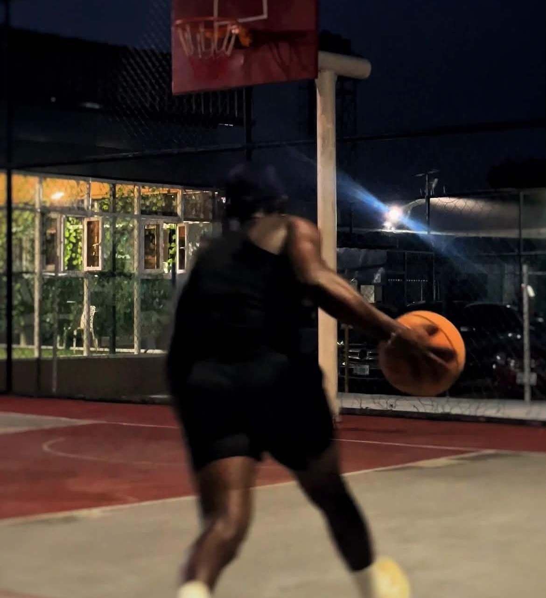
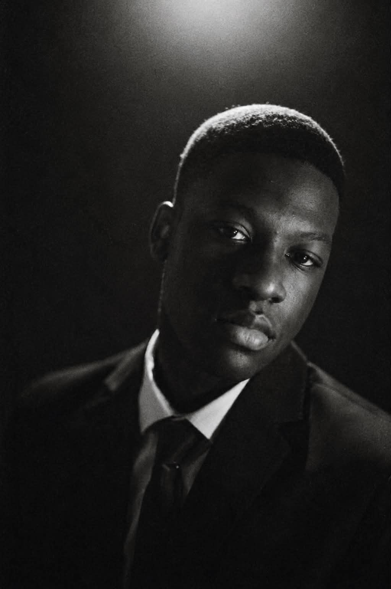

Basketball
Team play builds discipline, communication, and resilience—habits I bring into coding practice and group projects.
Interactive Resume
Lower 6 student building toward coding roles
Studying Maths, Physics, and Computer Science while learning HTML, CSS, and JavaScrip

About
I am a Lower 6 student at Hillbright Science College, focusing on Maths, Physics, and Computer Science. I am building a foundation in web development with HTML, CSS, and JavaScript, and I also use Python for exam coursework.
Outside class I draw and paint, play basketball, and contribute to the school media club—skills that sharpen creativity, teamwork, and communication.
Education
Nine O-levels completed, HEXCO certified in 2025, and progressing through A-level studies in STEM.
Certified by HEXCO in 2025, recognising technical and vocational achievement alongside my academic studies.
Skills
Select a skill to see how I use it. Bars animate as you scroll into view.
I structure pages with semantic tags so content is clear for people and screen readers. This resume is built with sections, headings, and accessible navigation.
Activities
Art, sport, and media keep me creative, focused, and collaborative.
I explore composition, colour, and visual storytelling through personal artwork.

Team play builds discipline, communication, and resilience—habits I bring into coding practice and group projects.
Covering school stories and visuals strengthens my eye for detail and how I present ideas—useful for UI and portfolio work.
Contact
Open to coding-related opportunities, internships, and learning conversations.